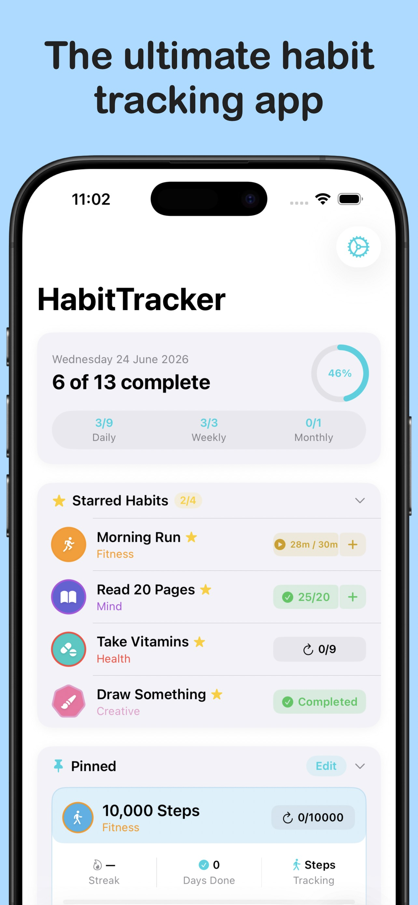
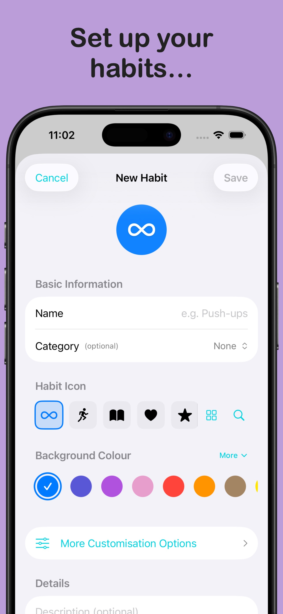
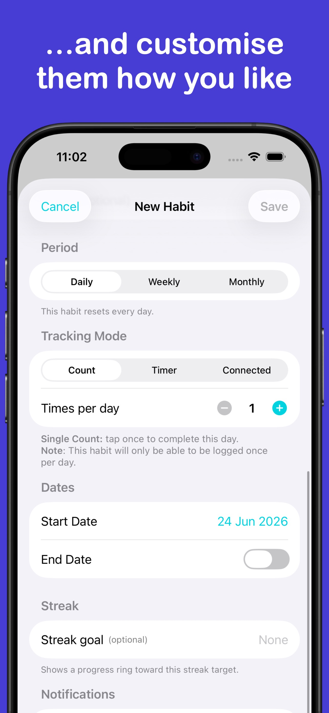
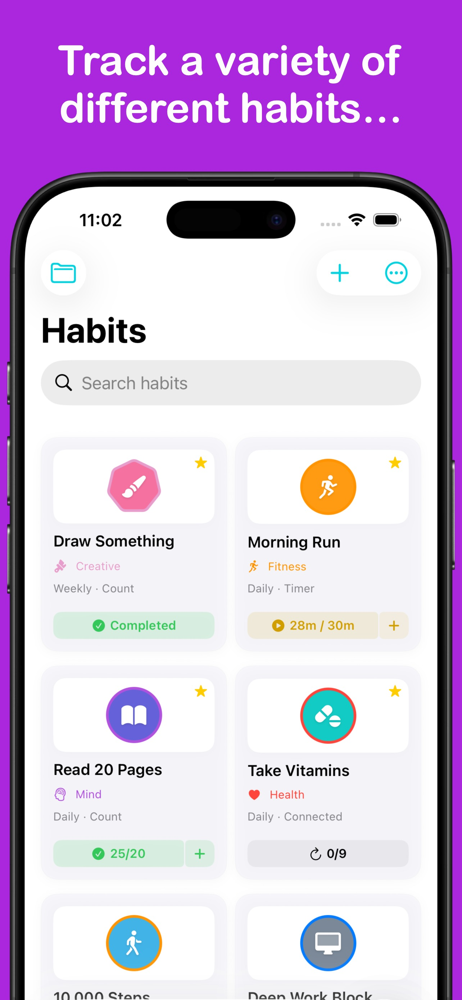
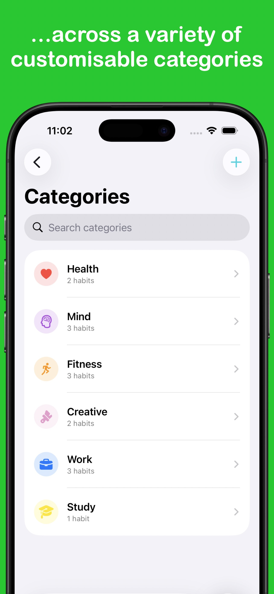
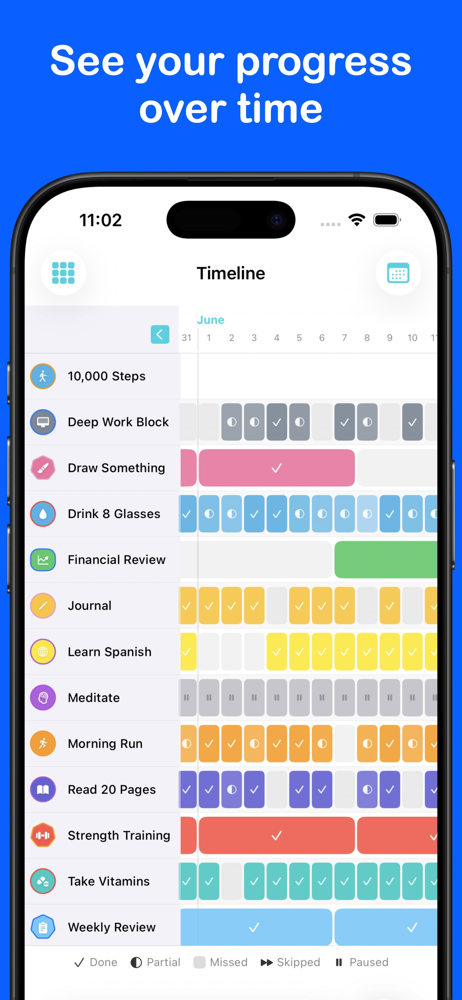
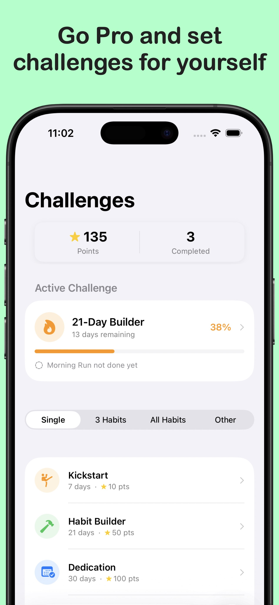
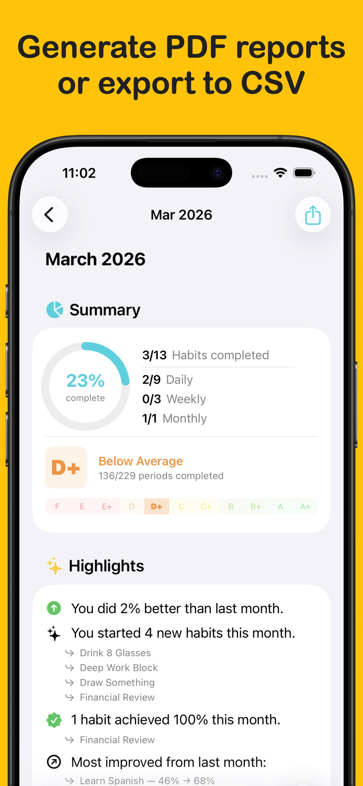
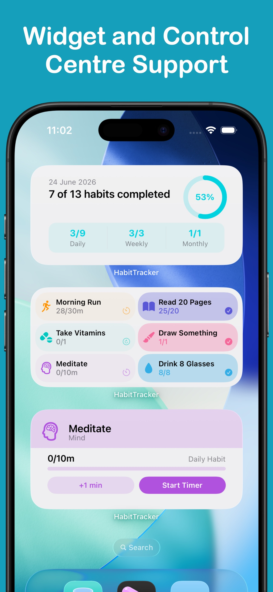

HabitTracker
Build lasting habits and track your daily routines.
HabitTracker is a habit tracking app that works your way — set up things the way you want, and start your new routine today. You can even link it to VitaminTracker or WaterTracker.
Download from the App Store todayScreenshots









Features
- Any habit, any period Daily, weekly, or monthly habits — track by tap count, by using built-in timer, or automatically via a connected source.
- Connected habits Link a habit to WaterTracker, VitaminTracker, or Apple Health and it marks itself complete the moment you hit your goal.
- Built-in timer Set a duration target and log time with a running timer — useful for meditation, reading, workouts, and more.
- Categories & organisation Group habits into colour-coded categories, pin your most important ones, and filter the list however you like.
- Streaks & reports Set streak goals to motivate yourself to stay on task.
- CSV and PDF export Export your full habit and log history at any time.
- Apple Watch app Browse your habits and track them from your wrist.
- Home Screen widgets Multiple widget styles let you check off habits and see today's progress without opening the app.
HabitTracker Pro
- Unlimited habits The free plan tracks up to 6 habits. Pro removes the limit so you can track even more.
- Challenges Take on built-in challenges — Perfect Week, Morning Routine, 100-day streaks, and even more — and earn points as you go.
- Tab bar customisation Choose which screens appear in your tab bar and in what order, so your most-used screens are always one tap away.
- Custom app icons Choose from a range of alternative app icons to personalise HabitTracker on your Home Screen.